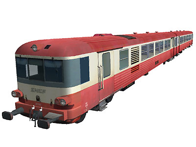
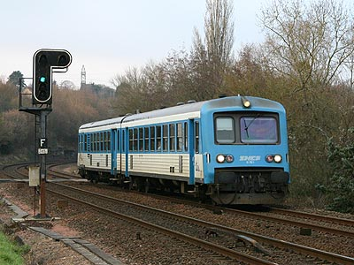
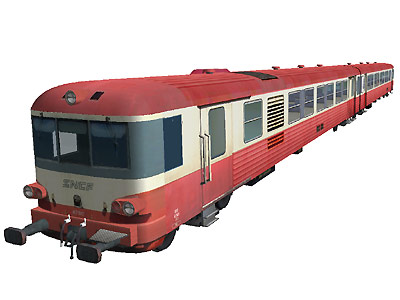

L'X 4750 version 
Edouard Staniczek a réalisé l'X4760 et son XR.
Ferrovia - 30 Mai 2012 - Mise à jour 27 Juin 2017
X 4750 - X 4790 - XP 94750
Dernière évolution des EAD, les X 4750 sont construits à 40 exemplaires (4750 à 4789), plus sept X 4790 (4790 à 4786) et huit XP 94750 (94750 à 94757).
Plus puissants que les X 4630, les X 4750 et suivants disposent d'un moteur Saurer de 600 chevaux que l'on retrouve sur les X 2100 et 2200. Ce qui leur permet une vitesse limite augmentée à 140 km/h. La numérotation des éléments est plus simple que celle de leurs ainés. Une motrice X475n étant associée à une remorque pilote XR 875n.
Les X 4790, très proches, furent commandés par la région Basse-Normandie pour la ligne Paris-Granville. Ils étaient aménagés avec des sièges individuels et avaient en début de carrière une livrée spécifique orange.
Enfin les XP 94750 formaient les RAP (Rames Automotrices Postales). Ils assuraient le transport de conteneurs postaux sur les relations Paris-Caen,
Paris-Rouen et Paris-Lille. Entre 1996 et 1998, sept motrices XP 94750 ont été transformées en X 4750 avec cabines renforcées
et ajoutées au parc TER Lorraine. En revanche, les XRP 98750 furent radiées et remplacées par des remorques pilotes provenant d'X 4300 amortis. Seuls l'XP 94755 et l'XRP 98755 sont conservés en l'état au Musée Postal des Anciens Ambulants de Toulouse, en gare de Toulouse-Raynal.
Depuis l'intégration des éléments transformés, la série compte 54 éléments (4750 à 4803).
Les éléments bourguignons ont été radiés en 2011. Fin 2014, le parc affecté au TER Lorraine fut liquidé, les engins radiés sont loués à RegioTrans en Roumanie.
Ne restaient, en service commercial en 2015, que les sept X 4790 toujours en activité en Basse-Normandie et six éléments TER Haute-Normandie qui côtoyaient les X 4900. La Normandie fut ainsi la dernière région où roulaient quotidiennement des Caravelles.
La livraison des Régiolis a provoqué l'amortissement complet de la série en décembre 2016.
Quelques données techniques
Constructeur : ANF
Motorisation : Saurer S1 DHR
Puissance : 440 kW
Vitesse limite : 140 km/h
Masse : 64,5t
Longueur : 42,480 m
Pour plus d'info :
La fiche X 4750, XP 94750 sur Wikipedia
Fiche technique des Caravelles de Florent Brisou
Les fiches X 4750 et XP 94750 sur trains-europe.fr
L'inventaire des X 4750, XP 94750 sur Trains du Sud-Ouest
La restauration de l'XP 94755 du musée postal des anciens ambulants de Toulouse
L'X 4780 à Moulins sur Allier (31/08/2002)
L'X 4781 à Belfort. Il roule désormais en Roumanie (23/10/2004)

L'X 4753 à Fondettes (26/12/2005)
L'X 4792 Basse Normandie à Dreux (14/04/2006)
L'X 4760 Auvergne à Roanne (17/01/2004)
L'X 4770 Lorraine à Metz (18/08/2008)
L'X 4754 Haute-Normandie à Dieppe (15/10/2011)
L'XP 94755 au Musée postal des anciens ambulants de Toulouse (21/06/2015)
L'X 4750 version 
Edouard Staniczek a réalisé l'X4760 et son XR.
